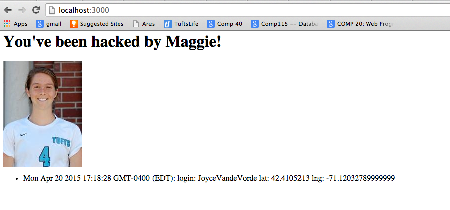
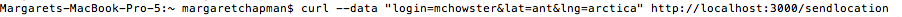
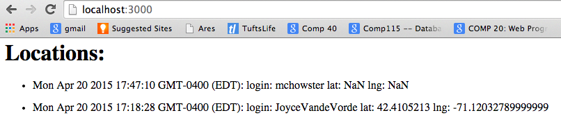
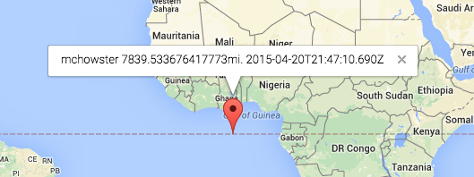
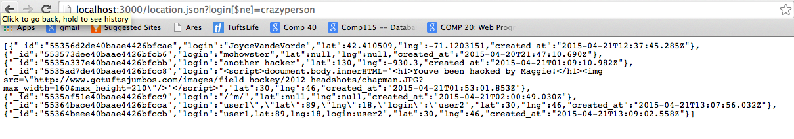

This mmap web application is vulnerable to Cross Site Scripting attack because the client shows user input without encoding or sanitizing special characters. Cross Site scripting can occur when a user passes javascript as an input. When this input is rendered on a web page the script will be executed, and the javascript will be run. An example of an attach would be for a user to pass <script>document.body.innerHTML='<h1>Youve been hacked by Maggie!</h1><img "http://www.gotuftsjumbos.com/images/field_hockey/2012_headshots/chapman.JPG?max_width=160&max_height=210"/>'</script> as the login parameter. This causes the following to show when the locations are displayed:
Users essecially have access to do anything that a javascript function could do.
Use HTML encoding. Can use the npm package html-entities. Envoke with:
var Entities = require('html-entities').XmlEntities;
entities = new Entities();
var safe-string = entities.encode(string);
Users can set their latitude and longitude values to types that aren't numbers. These then display as NaN on the '/' homepage and the markers for these users show up at 0, 0 (an invalid location). Users can also set their locations to be outside the the "valid" range, -90 to 90 degrees.



A simple check after parsing the lat and lng values to floats will ensure that entries that non-number lat or lng values will not be entered into the database. Further, a simple functin can check that the values are within a "valid" range.
A user can see all database entries using a GET request by using associative array injection. By simply passing 'login[$ne]=something', the page will display all users that don't have a login of "something". This allows a user to see all data in the database, potentially exposing items that should be protected.
-sidenote: had to change server to show on my local -had to change mmap line 97 from student_list = JSON.parse(xhr.responseText); to student_list = JSON.parse(xhr.responseText).students; to get the other people to show -also the marker doesn't seem to be showing the current location